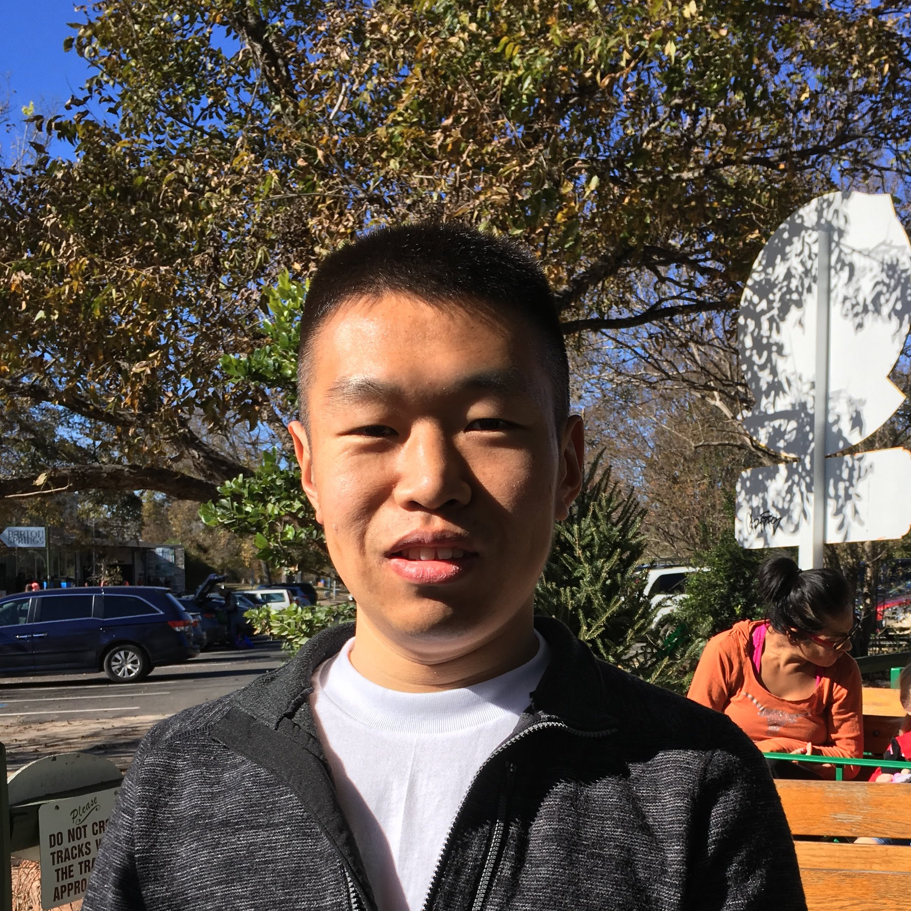
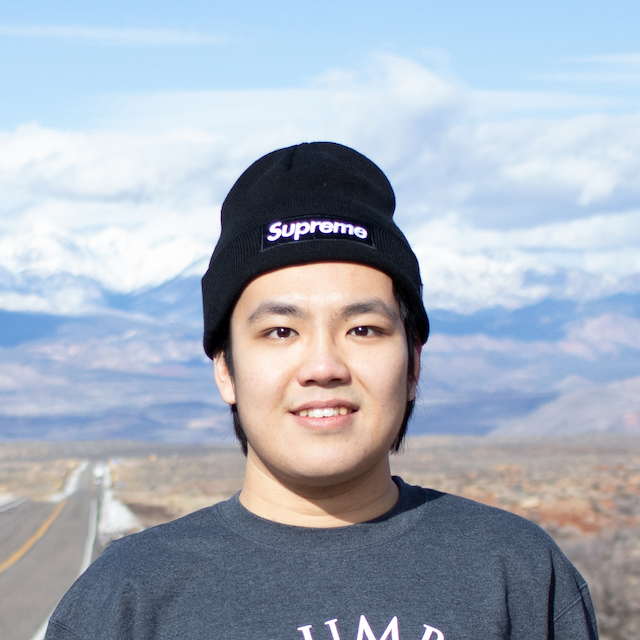
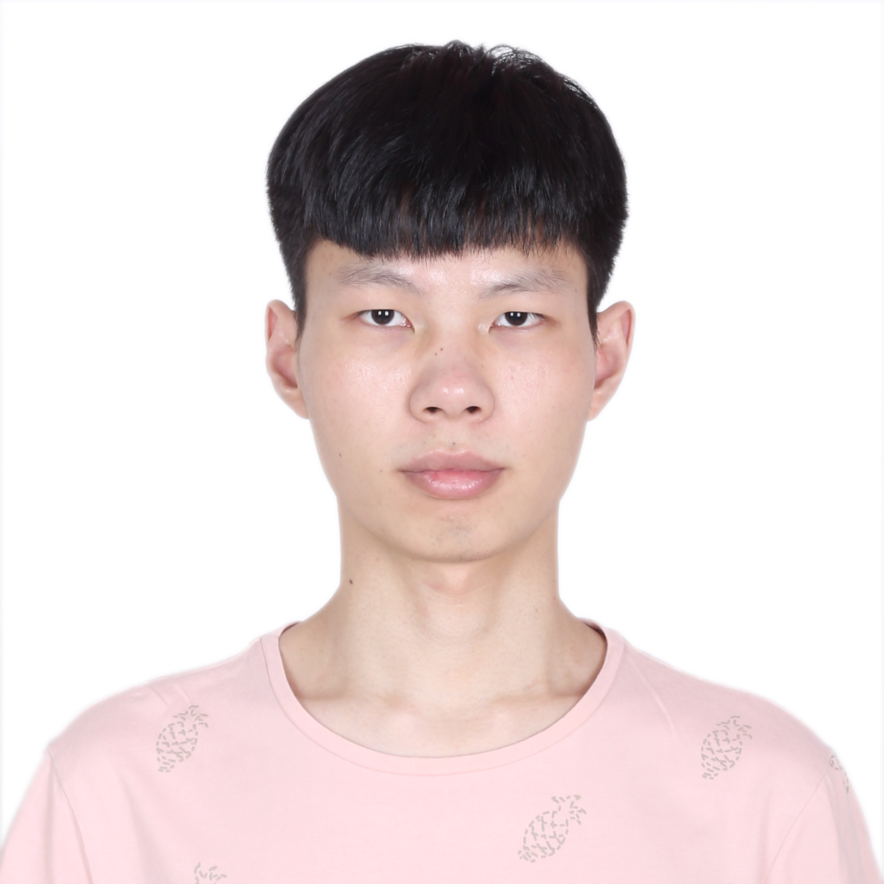

|  | Zhiguang (Caleb) Huo (Assistant Professor in Deptartment of Biostatistics) |
|  | Haocheng Ding (Ph.D. student in Biostatistics; Summner 2019 ~ Now) |
| Lingsong Meng (Ph.D. student in Biostatistics; Fall 2019 ~ Now) | |
|  | Yutao Zhang (Ph.D. student in Biostatistics; Fall 2022 ~ Now) |
Our group will recruite PhD students from the Biostatistics department applicants. If funding is available, I will look the applicant pool in spring to identify students whose research interest/expertise align with our research interest. I prefer recruiting PhD students from their first year for early training and early publications.